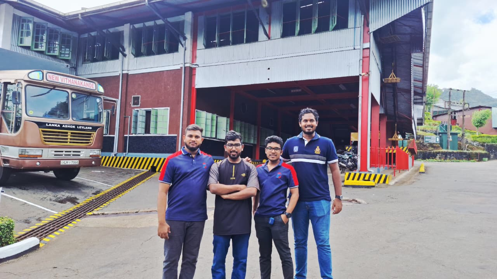
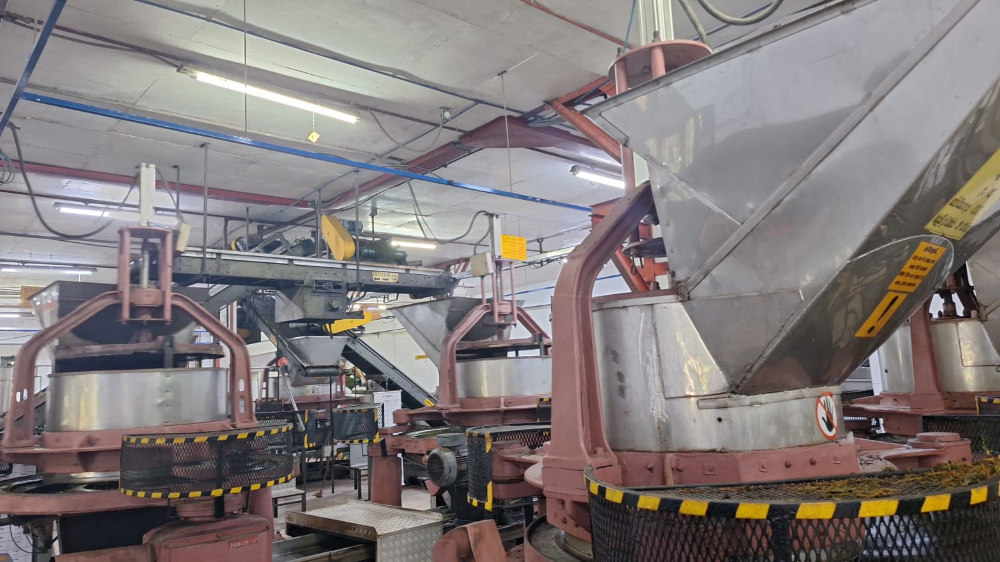
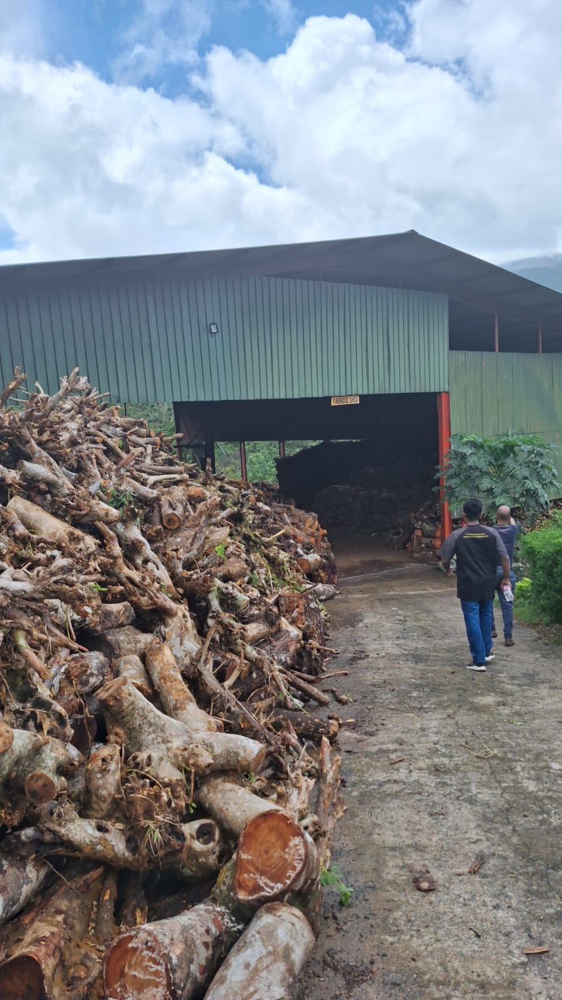
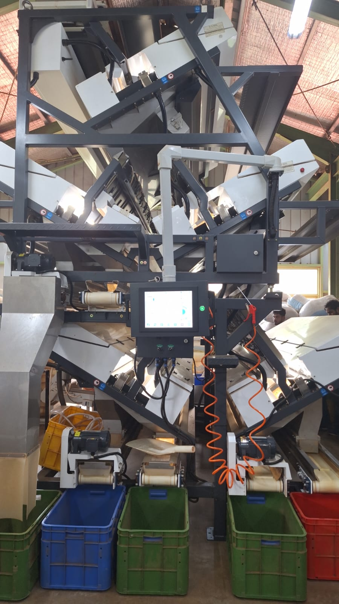
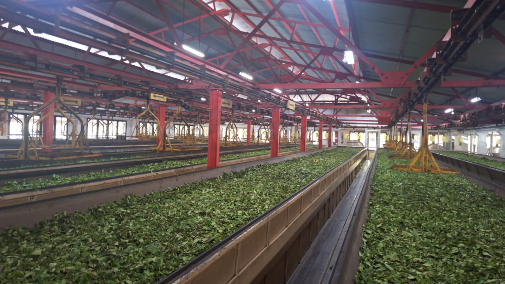

Optimizing Production Lines at New Vithanakande Tea Factory





Overview
Currently underway as part of the ME3043 Production and Operations Management module, this ongoing project focuses on analyzing and improving the manufacturing processes at the New Vithanakande Tea Factory (Pvt) Ltd. Located near the Sinharaja Rainforest in Sri Lanka, this renowned facility supports over 6,000 local smallholder farmers and processes approximately 20,000 kilograms of fresh tea leaves daily into premium low-grown orthodox Ceylon black tea.
The Challenge
The factory management highlighted two primary operational challenges: the rising cost of rubber firewood and a shortage of available workers. Our team is targeting specific inefficiencies across three main production areas:
- Boiler & Fuel Management: Operational waste driven by poor facility layout and substandard wood storage.
- Fermentation Process: Inefficiencies stemming from manual humidity regulation and the labor-intensive transfer of rolled leaves, which is difficult to fully automate due to existing layout constraints.
- Withering Process: Challenges include manual hot airflow control, uneven withering, and labor-heavy loading onto conveyors.
Project Objectives
The primary aim of this project is to optimize manufacturing operations and reduce overall production costs by developing labor-saving and energy-efficient solutions. To achieve this, our team is working to:
- Assess current factory processes to pinpoint the root causes of high firewood consumption, labor reliance, and quality inconsistencies.
- Explore improved facility layouts, semi-automated controls, and better material handling methods.
- Propose practical operational upgrades for fuel storage, automated environmental controls, and material transfer to boost factory efficiency.
Ongoing Methodology
As the project progresses through its timeline, we are actively conducting detailed data collection on the factory floor. We will be utilizing virtual plant simulation software to model the facility and rigorously evaluate the feasibility, implementation costs, and projected energy savings of our proposed engineering solutions.